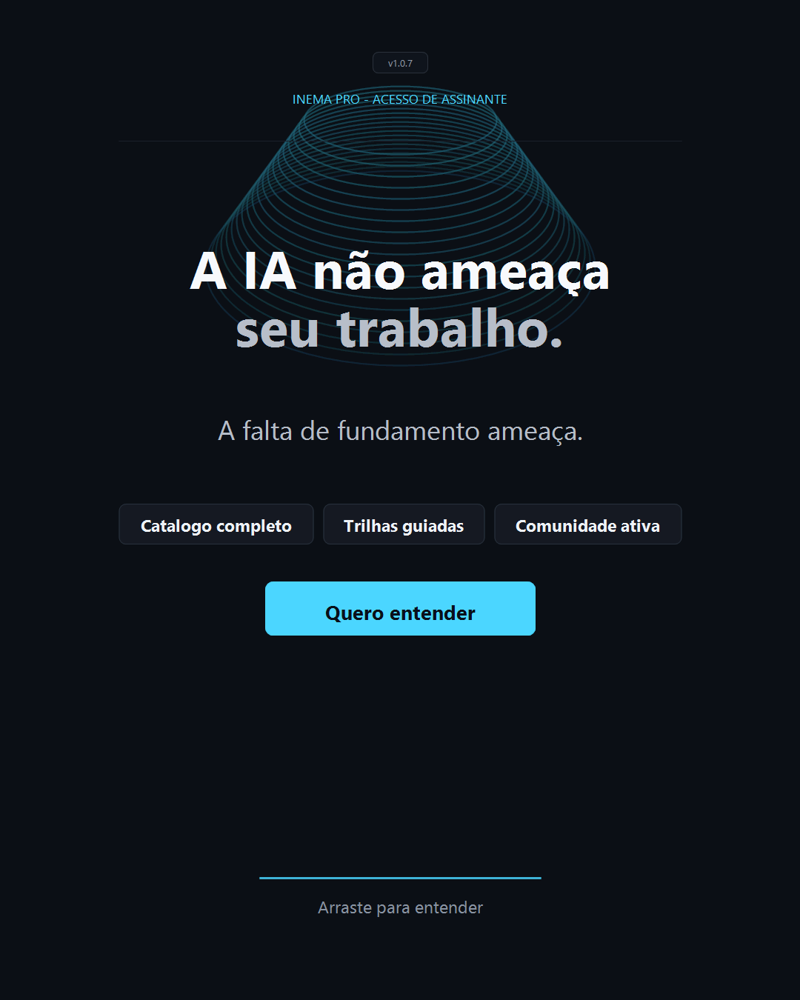
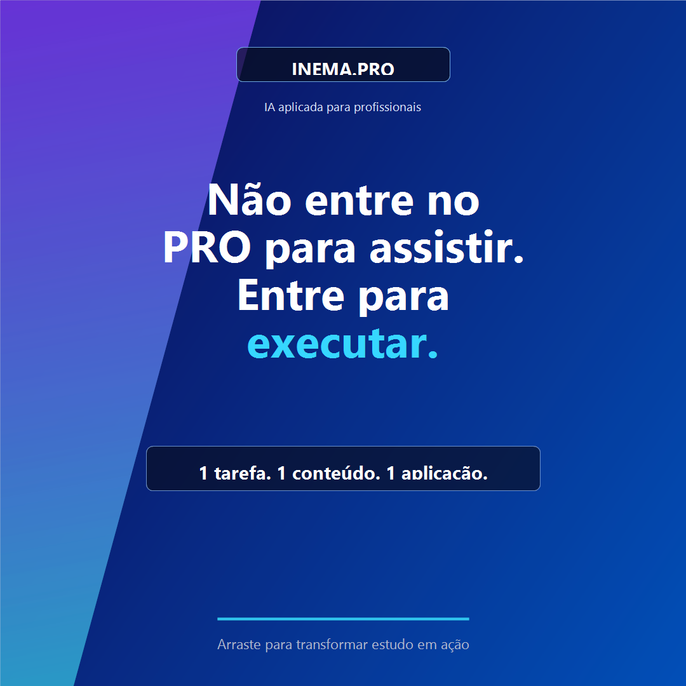
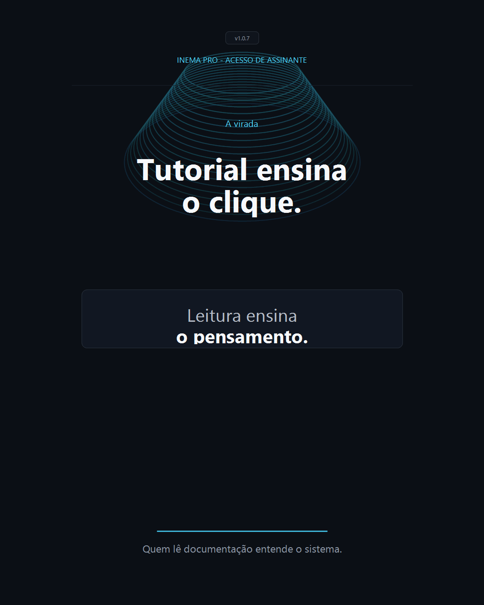

Conceito
A identidade parte da linguagem atual do INEMA.PRO: fundo escuro, tipografia direta, acento ciano e elementos de interface. Para este workshop, o âmbar entra como cor de negócio, proposta e venda.
IA aplicada para negócios
Da habilidade ao cliente
Uma identidade visual para transformar conhecimento técnico em oferta, diagnóstico, proposta e recorrência.
Direção visual
A identidade parte da linguagem atual do INEMA.PRO: fundo escuro, tipografia direta, acento ciano e elementos de interface. Para este workshop, o âmbar entra como cor de negócio, proposta e venda.
O visual precisa mostrar método e execução. A narrativa sai de ferramenta e chega em serviço: problema, oferta, diagnóstico, proposta, preço, cliente e recorrência.
Robôs genéricos, cérebro futurista, excesso de brilho, promessas vagas e estética infantil. O tom é de maturidade operacional.
Paleta
Sistema gráfico
O que o participante sabe usar.
A dor real dentro da empresa.
O serviço que o cliente entende.
Escopo, prazo, preço e próximo passo.
Referência INEMA.PRO



Roteiro visual
Entrega final